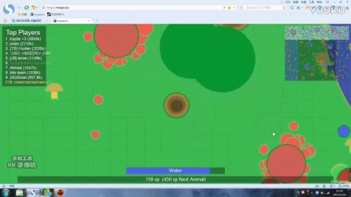
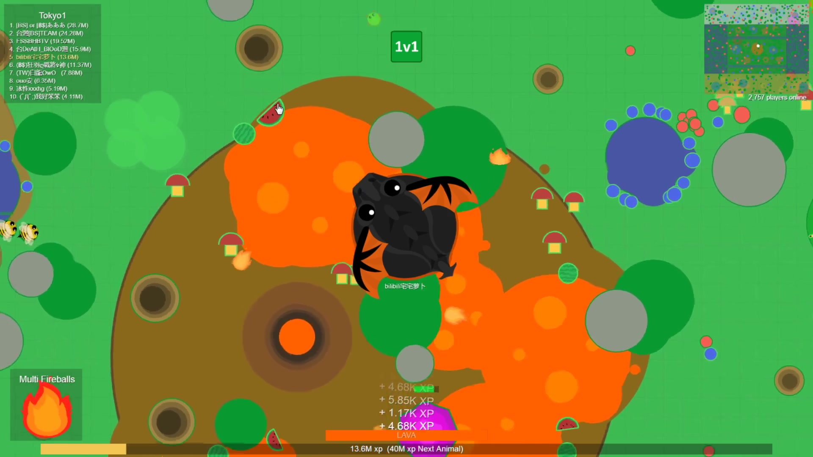
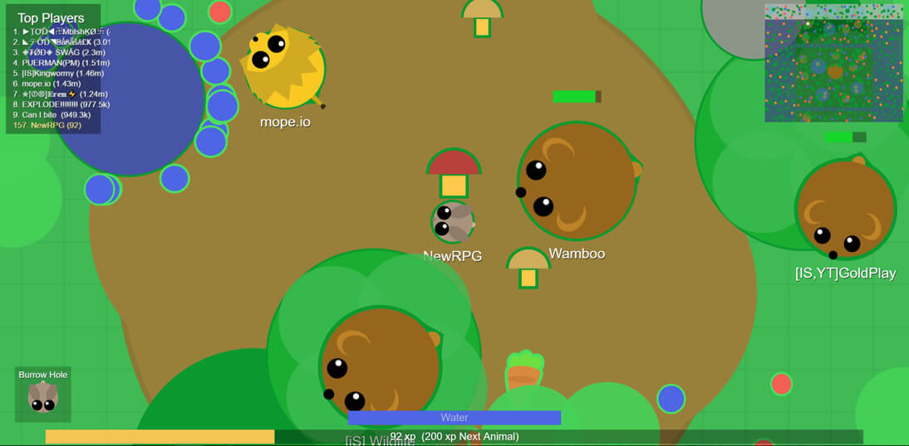
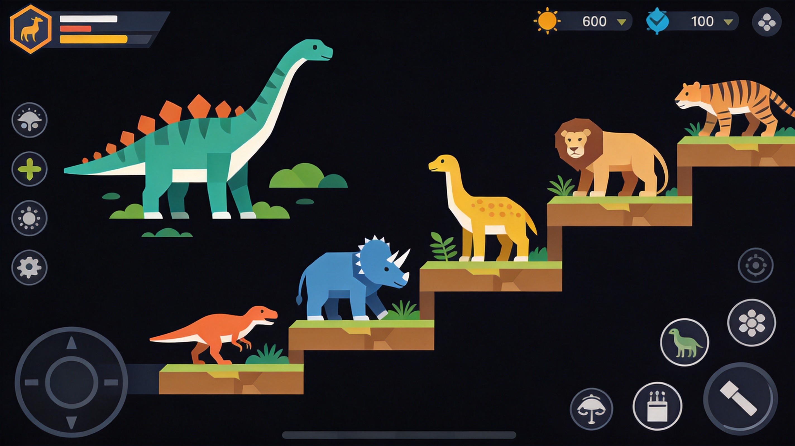
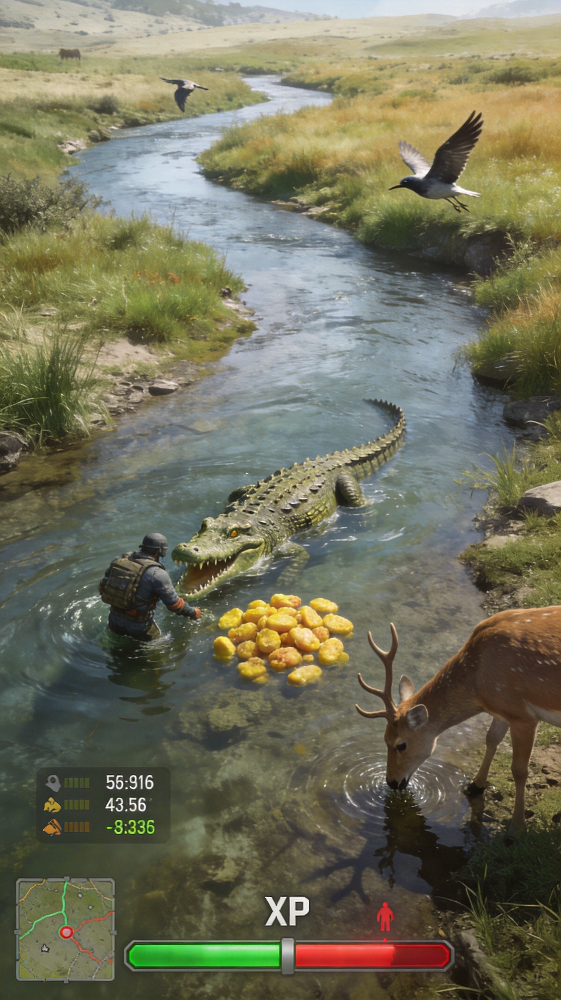

Mope.io is a multiplayer ecosystem survival game where you play as various animals, starting from the bottom of the food chain and evolving into apex predators. The game simulates a natural ecosystem with predators, prey, food sources, and environmental hazards. This comprehensive guide covers evolution routes, survival strategies, and tips to help you climb the food chain.
🎯 Game Basics

Objective
In Mope.io, your goal is to evolve from a small animal to an apex predator by eating food, hunting weaker animals, and avoiding stronger ones. The food chain determines who can eat whom.
The Food Chain
The fundamental rule: animals higher on the chain can eat animals below them. Predators can eat prey animals; prey can eat plants and berries; humans can use tools and vehicles.
Core Mechanics
- XP System - Gain experience by eating, hunting, and surviving
- Health - Depletes when attacked, regenerates when eating
- Water - Must drink regularly or take damage
- Evolution - Reach XP thresholds to transform
Controls
- WASD or Arrow Keys - Move your animal
- Space - Special ability (varies by animal)
- E - Eat food/meat
- F - Boost/dash (when available)
📈 Evolution Routes

Land Animal Evolution Path
Classic land animal progression: Mouse → Rabbit → Pig → Deer → Fox → Zebra → Boar → Black Bear → Grizzly Bear → Tiger → Lion → Elephant
Ocean Animal Evolution Path
Marine ecosystem progression: Shrimp → Clownfish → Jellyfish → Pufferfish → Seahorse → Snapper → Sea Turtle → Shark → Orca → Whale → Kraken → Sea Monster
Bird Evolution Path
Aerial progression: Chicken → Duck → Turkey → Goose → Pelican → Ostrich → Drone → Eagle → Phoenix → Giant Eagle
Special Evolution
animals with special abilities: Dragon (fire breath, flight, ice immunity), King Dragon (ultimate predator, lava immunity), T-REX (powerful dinosaur), Yeti (ice abilities).
Don't rush evolution. Each tier requires specific XP thresholds. Stay at each level long enough to master your abilities before evolving.
🌍 Biomes Explained

Land Biomes
- Plains - Grass, bushes, and general land animals
- Desert - Cacti, sand, tumbleweeds; harder to find water
- Arctic - Snow, ice lakes, penguins; cold damage without fur
- Hills - Elevated terrain, good for predator ambushes
Ocean Biomes
- Shallow Water - Near beaches, good for low-tier ocean animals
- Deep Ocean - Darker, contains high-tier ocean creatures
- Coral Reefs - High food density, many hiding spots
- Kelp Forests - Dense vegetation, good cover
Special Areas
- Volcano - Dangerous but contains rare foods
- Mushroom Forest - mushrooms restore health
- Lake Islands - Safe zones for lower-tier animals
🛡️ Survival Strategies
1. Know Your Place in the Chain
Always be aware of which animals can eat you and which you can eat. The minimap shows nearby animals. Plan your movements accordingly.
2. Avoid Predators Early Game
As a low-tier animal, stay away from high-tier predators. Use hiding spots like bushes, rocks, and small caves. Don't take unnecessary risks.
3. Efficient Eating
Maximize your XP gain: eat meat from kills for more XP than plants, look for AI berry bushes that regenerate, use AI hills with multiple food sources.
4. Water Management
All animals need water. Don't let your water bar drop too low. Plan routes that pass by water sources, and be careful drinking in open areas where predators lurk.
5. Environmental Hazards
Watch out for: Lava (kills most animals instantly), Arena walls (can crush you), Other players (especially when you're low health).
👑 Apex Predator Tips
1. Hunt Effectively
As a high-tier predator: use stealth (approach prey quietly), block escape routes (corner prey against walls), time your attacks (wait for prey to make mistakes).
2. Manage Your Territory
Apex predators often claim territories. Patrol your area to scare off threats and find prey. Just be aware of other apex predators.
3. Avoid Other Apex Predators
Even as a top predator, other apex animals are dangerous. Fights between apex predators often result in both being weakened and killed by third parties.
4. Use Special Abilities
High-tier animals have abilities: Lion (pride bonuses), Shark (faster swimming in deep water), Eagle (can pick up small animals), Dragon (fire breath and flight).

💎 Pro Tips
Stay near water sources. Whether you're a land or ocean animal, water access is crucial. Animals that wander too far from water often die of dehydration.
Use the terrain to your advantage. Hills slow down smaller animals. Water slows land animals. Use these to catch prey or escape predators.
Watch the kill feed. When high-tier animals die, smaller predators become vulnerable. This creates hunting opportunities.
Don't overstay your welcome. As an apex predator, you're a target for other apex predators. Don't stay in one area too long.

❓ Frequently Asked Questions
What is the highest tier animal in Mope.io?
The King Dragon is currently the highest tier animal. It has fire breath, immunity to lava, and flight capabilities. However, other apex animals like the T-REX are similarly powerful.
How do I evolve faster?
Focus on eating meat from kills rather than plants. Find areas with high animal density. Also, try to stay alive as long as possible—death resets your progress.
Can I play with friends?
Yes! Mope.io supports multiplayer. You can team up with friends to hunt together, share food, and protect each other from predators.
What animals should beginners start with?
Start with basic animals like Mouse or Shrimp. Learn the mechanics, map layout, and food chain before trying higher-tier animals.
How do I escape from predators?
Use terrain to your advantage. Water slows land animals. Hills slow small animals. Small caves can hide you. Also, some animals have dash abilities to escape.
📝 Conclusion
Mope.io is a game of patience, positioning, and understanding the ecosystem. The key to success is knowing when to hunt, when to hide, and when to evolve. Practice these strategies, learn from each death, and climb the food chain to become the apex predator.
Ready to enter the wild? Jump into Mope.io and start your journey from tiny prey to fearsome predator!
Last updated: January 20, 2024
Written by the iogameguide.com team